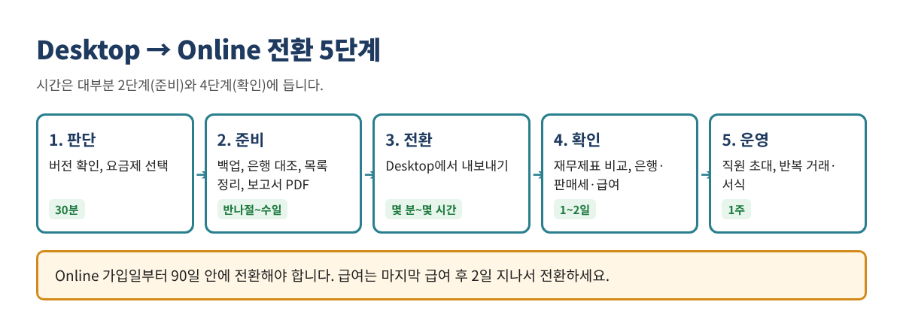
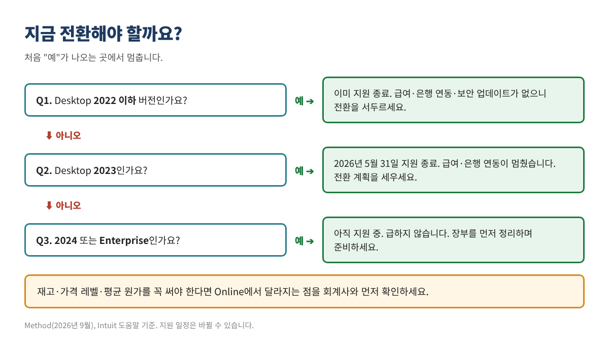
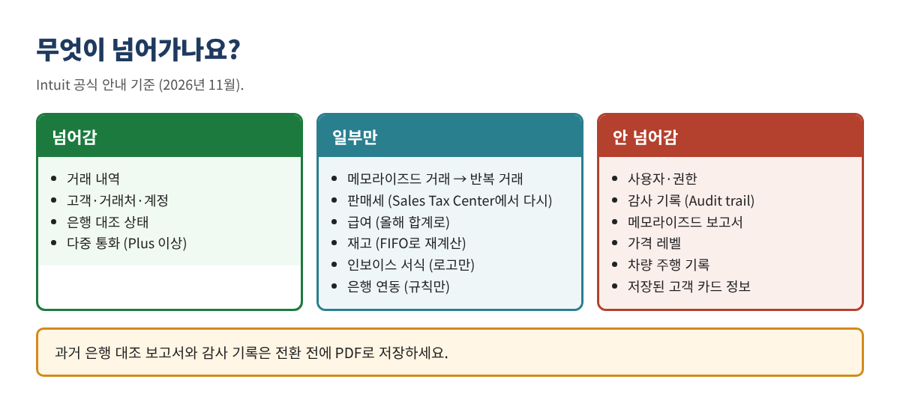

QuickBooks Desktop 2023 이하 버전을 쓰고 있다면 이미 급여, 은행 연동, 보안 업데이트가 작동하지 않습니다. 전환 자체는 몇 시간이면 끝나지만, 전환 전 장부 정리와 전환 후 잔액 대조가 성패를 가릅니다.
이 글은 그 앞뒤 과정을 다섯 단계로 나눠 설명합니다. 순서대로 따라 하면 숫자가 맞지 않는 Online 장부를 다시 고치는 일을 피할 수 있습니다.
이런 분께 필요합니다: 오래 Desktop을 써 온 사장님과 북키퍼, 지원 종료로 급여·은행 연동이 멈춘 경우, Online으로 옮길지 고민 중인 경우.

가장 중요한 두 가지 기한. ① Online에 가입한 날부터 90일 안에 Desktop 데이터를 옮겨야 합니다(회계사가 대신 가입했다면 180일). ② 급여를 쓰면 마지막 급여 후 최소 2일 지나서 전환하고, 전환 후 2~3영업일 지나서 Online 급여를 시작합니다.
| 버전 | 상태 | 의미 |
|---|---|---|
| 2022 이하 | 지원 종료 | 급여·은행 연동·보안 업데이트 없음 |
| 2023 | 2026년 5월 31일 지원 종료 | 프로그램은 열리지만 급여·은행 연동 중단 |
| 2024 | 지원 중 (종료일 미발표) | 당장 급하지 않음 |
| Enterprise | 계속 판매·지원 | 당장 급하지 않음 |

Pro Plus·Premier Plus는 2024년 9월 30일 이후 신규 판매가 중단됐고, 기존 구독자만 갱신할 수 있습니다.
| 제품 | 가격 | 사용자 |
|---|---|---|
| Desktop Pro Plus | 연 $1,149 (2026년 2월부터) | 1명 |
| Desktop Premier Plus | 연 $1,609 | 1명 |
| Online Simple Start | 월 $38 (연 $456) | 1명 |
| Online Essentials | 월 $85 (연 $1,020) | 3명 |
| Online Plus | 월 $140 (연 $1,680) | 5명 |
Online 가격은 2026년 8월 인상 후 기준입니다. 가입 전 Intuit 공식 가격 페이지에서 다시 확인하세요.
거래 내역과 고객·거래처·계정은 대부분 넘어갑니다. 문제는 설정, 서식, 보고서, 판매세입니다.

보고서 기준: 발생주의(Accrual) 보고서는 일치해야 하지만 현금주의(Cash) 보고서는 다를 수 있습니다. 전환 후 비교는 반드시 Accrual로 하세요.
지저분한 장부를 그대로 옮기면 문제도 그대로 넘어갑니다. Desktop에서 정리하고 옮기는 것이 훨씬 쉽습니다.
전환은 Desktop 프로그램 안에서 시작합니다. 전환하는 동안에는 Desktop에 새 거래를 입력하지 마세요.
다시 해야 할 때: 결과가 이상하면 Desktop에서 원인을 고치고 같은 Online 회사에 다시 내보낼 수 있습니다. 이때 기존 Online 데이터는 덮어써지므로, 전환이 확정되기 전에는 Online에 새 거래를 입력하지 마세요.
핵심 보고서가 Desktop과 일치할 때까지 새 거래를 입력하거나 직원을 초대하지 마세요.
Desktop 파일은 삭제되지 않습니다. Desktop 2023 R3 이상은 구독을 해지해도 1년간 읽기 전용으로 열 수 있습니다. 세무 기록 보관 기간을 생각해 백업본과 PDF 보고서를 따로 보관하세요.
오래 Desktop을 쓴 가게는 매일 매출을 입력하는 방식이 제각각인 경우가 많습니다. 전환을 기회로 한 가지 방식으로 통일하세요.
| 점검 항목 | 식당 | 세탁소 |
|---|---|---|
| 일일 매출 기록 | Sales Receipt, 분개, 입금만 기록 등이 섞여 있으면 전환 후부터 일일 분개 하나로 통일 | 서비스별 매출이 한 계정에 묶여 있으면 서비스별로 분리 |
| 카드 매출 | 수수료 차감 후 입금액을 매출로 잡았다면 매출이 적게 잡힌 것. 총액 매출 + 수수료 비용으로 | 식당과 동일 |
| 팁 | 카드 팁을 부채 계정(Tips Payable)으로 분리 | 해당 없음 |
| 배달앱 | 정산금만 매출로 잡았다면 수수료 비용이 빠진 것 | 해당 없음 |
| 선불·외상 | 기프트카드 판매는 매출이 아니라 부채 | 하우스 어카운트 잔액이 POS와 같은지 확인 |
| 판매세 | 음식·주류 세율이 다른 지역이면 설정 재확인 | 주별 과세 여부가 다름. 수선·세탁 구분 확인 |
과거 장부를 고칠지는 회계사와 상의하세요. 이미 신고한 해의 장부를 고치면 신고한 숫자와 달라집니다. 보통은 전환 시점부터 올바른 방식으로 기록하고 과거는 그대로 둡니다.
이 글은 교육용 자료이며 회계·세무·법률 자문이 아닙니다. Intuit의 절차·가격·기한은 자주 바뀌므로 실행 전에 공식 도움말을 다시 확인하세요. 메뉴 이름은 바뀔 수 있습니다. QuickBooks는 Intuit Inc.의 등록 상표이며, 이 글은 Intuit과 제휴·보증 관계가 없습니다.
출처(2026년 11월 확인): Intuit, "Move your QuickBooks Desktop company file to QuickBooks Online": https://quickbooks.intuit.com/learn-support/en-us/help-article/import-export-data-files/move-quickbooks-desktop-file-quickbooks-online/L6af3Z0Fb_US_en_US · Intuit, "Learn how features and data transfer from Desktop to Online": https://quickbooks.intuit.com/learn-support/en-us/help-article/import-export-data-files/expect-switch-quickbooks-desktop-quickbooks-online/L0dEyNosU_US_en_US · Intuit, "Learn what to do after you move to QuickBooks Online": https://quickbooks.intuit.com/learn-support/en-us/help-article/convert-files/converting-quickbooks-desktop-windows-mac-online/L6QYzKBOV_US_en_US · Intuit, Desktop stop-sell: https://quickbooks.intuit.com/r/whats-new/quickbooks-desktop-stop-sell/ · Method, QuickBooks Desktop discontinued: https://www.method.me/blog/quickbooks-desktop-discontinued/ · AuditFriendly, QuickBooks Online 2026 price increase: https://auditfriendly.co/answers/quickbooks-online-price-increase-2026